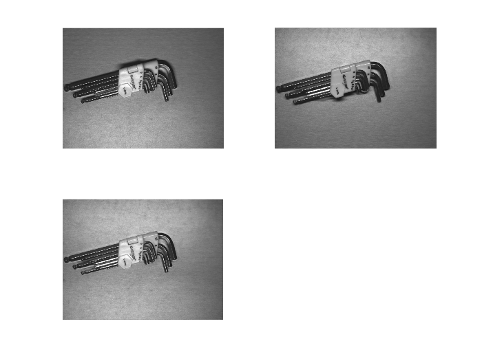

%-----------------ImageFusion Based on Wavelet------------------% %----低频小波系数加权平均，高频取绝对值较大融合策略 %----小波变换后使用最简单融合规则，效果一般，比空域直接融合稍微好点 %----2009-03-20@储彬彬---QQ304150436---E_mail:cbbpaper@126.com---% %---------------------------------------------------------------% clear all clc x1=imread('1.bmp'); x1=rgb2gray(x1); x1=double(x1)/255; x2=imread('2.bmp'); x2=rgb2gray(x2); x2=double(x2)/255; subplot(221) imshow(x1) subplot(222) imshow(x2) %[row,col]=size(x1); %x=[]; [ca1,ch1,cv1,cd1]=dwt2(x1,'db1'); [ca2,ch2,cv2,cd2]=dwt2(x2,'db1'); [row,col]=size(ca1); for i=1:row for j=1:col %if ca1(i,j)>ca2(i,j) % ca(i,j)=ca1(i,j); %else % ca(i,j)=ca2(i,j); %end % ca(i,j)=(ca1(i,j)+ca2(i,j))/2; if abs(ca1(i,j))>abs(ca2(i,j)) ca(i,j)=ca1(i,j); else ca(i,j)=ca2(i,j); end % if abs(ch1(i,j))>abs(ch2(i,j)) % ch(i,j)=ch1(i,j); % else % ch(i,j)=ch2(i,j); % end ch(i,j)=(ch1(i,j)+ch2(i,j))/2; cv(i,j)=(cv1(i,j)+cv2(i,j))/2; cd(i,j)=(cd1(i,j)+cd2(i,j))/2; % if abs(cv1(i,j))>abs(cv2(i,j)) % cv(i,j)=cv1(i,j); % else % cv(i,j)=cv2(i,j); % end % if abs(cd1(i,j))>abs(cd2(i,j)) % cd(i,j)=cd1(i,j); % else % cd(i,j)=cd2(i,j); % end end end x=idwt2(ca,ch,cv,cd,'db1'); imwrite(x,'wavefusionV1.bmp'); imwrite(ca1,'ca1.bmp'); imwrite(ch1,'ch1.bmp'); imwrite(cv1,'cv1.bmp'); imwrite(cd1,'cd1.bmp'); subplot(223) imshow(x)